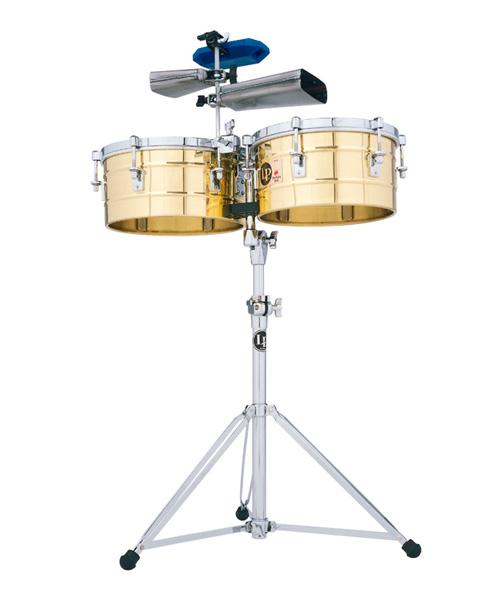
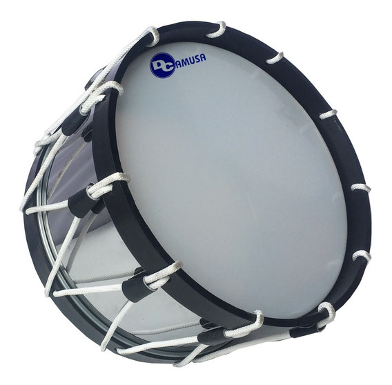
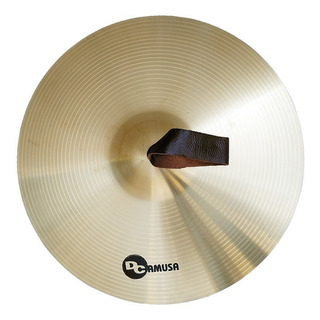
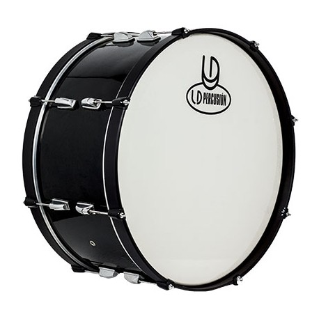

- PERCUSIONES -
Un instrumento de percusión es un tipo de instrumento musical cuyo sonido se origina al ser golpeado o agitado. Es la forma más antigua de instrumento musical. La percusión se distingue por la variedad de timbres que es capaz de producir y por su facilidad de adaptación con otros instrumentos musicales.
Cabe destacar que puede obtenerse una gran variedad de sonidos según las baquetas o mazos que se usan para golpear algunos de los instrumentos de percusión.
INSTRUMENTOS EN VENTA:
TIMBAL

Un timbal o tímpano (en plural italiano: timpani) es un instrumento musical membranófono de sonoridad grave, que puede producir golpes secos o resonantes. Se le utiliza golpeando los parches con un palillo o baqueta especial llamada «baqueta de timbal».
Está formado principalmente con un caldero de cobre, cubierto por una membrana.
Dimensiones del producto : 81.28 x 40.64 x 83.82 cm; 4.54 kg
Producto en Amazon.com.mx desde : 15 julio 2015
Fabricante : MEINL
ASIN : B004XJNFG0
Número de modelo del producto : MTT1415BK
Clasificación en los más vendidos de Amazon: nº21,082 en Instrumentos Musicales (Ver el Top 100 en Instrumentos Musicales)
nº136 en Tambores
PRECIO: $14,500.00
TAMBOR

Un tambor es un instrumento de percusión de sonido indeterminado, perteneciente a la familia de los membranófonos según el sistema de clasificación de Hornbostel-Sachs.1 Consta de una caja de resonancia, que suele ser de forma cilíndrica, y una membrana llamada parche,
que cubre la abertura de la caja.2 Algunos tipos de tambores tienen parches en ambos lados.
El sonido se obtiene al golpear el instrumento en el parche con la mano o con baquetas. También se suele percutir la caja.
Referencia del fabricante Bnineteenteamo58wig24fv-11
ASIN B07Z855FRY
Producto en Amazon.com.mx desde 17 octubre 2019
Clasificación en los más vendidos de Amazon nº6,747 en Instrumentos Musicales (Ver el Top 100 en Instrumentos Musicales)
nº26 en Tambores
PRECIO: $2,500.00
PLATILLOS

Los platillos, platos, latos, címbalos o cimbales son instrumentos de percusión de sonido indeterminado, lo que significa que las notas no tienen una altura definida.
Pertenecen a la familia de los idiófonos, por lo que el sonido se produce entrechocando uno con otro o percutiéndolos con baquetas.
Is Discontinued By Manufacturer : No
Dimensiones del producto : 38.1 x 38.1 x 5.08 cm; 879.97 g
Producto en Amazon.com.mx desde : 21 enero 2016
Fabricante : Avedis Zildjian Company
ASIN : B01AA1LSTU
Número de modelo del producto : S15TC
Clasificación en los más vendidos de Amazon: nº7,162 en Instrumentos Musicales (Ver el Top 100 en Instrumentos Musicales)
nº20 en Platillos Crash
PRECIO: $3,500.00
BOMBO

El bombo es un instrumento musical de percusión membranófono, de timbre muy grave aunque de tono indeterminado.
Debido a su sonido grave, se usa habitualmente para marcar y mantener el pulso en diversos estilos de música.
Is Discontinued By Manufacturer : No
Dimensiones del producto : 58.7 x 58.7 x 3.8 cm; 300 g
Producto en Amazon.com.mx desde : 3 diciembre 2018
Fabricante : Evans
ASIN : B07L1BQFJS
Número de modelo del producto : BD18SO1
Clasificación en los más vendidos de Amazon: nº3,160 en Instrumentos Musicales (Ver el Top 100 en Instrumentos Musicales)
nº46 en Parches para Instrumentos de Percusión
PRECIO: $16,500.00